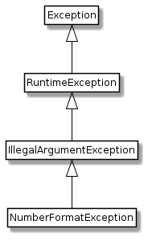

Excepcions¶
En aquesta secció coneixerem el mecanisme de control d’excepcions en el llenguatge Java.
Una excepció és un esdeveniment (event) que representa una condició anormal en l’execució d’un programa i que atura el flux normal d’execució.
Les excepcions permeten a les aplicacions detectar i donar resposta situacions d’error de manera controlada (sense penjar-se)
Considerem l’exemple simplificat de la classe Hora
1 2 3 4 5 6 7 8 9 10 11 12 | public class Hora {
private int h, m, s;
public Hora() { h=0; m=0; s=0; }
public Hora(int h,int m, int s) { this.h=h; this.m=m; this.s=s; }
public int getHores() { return h; }
public int getMinuts() { return m; }
public int getSegons() { return s; }
public void setHores(int h) { this.h=h; }
public void setMinuts(int m) { this.m=m; }
public void setSegons(int s) { this.s=s; }
public String toString() { return h+":"+m+":"+s; }
}
|
Imaginem que volem controlar que els valors que ens introdueixen els mètodes set siguin correctes.
Una manera seria la següent:
public void setHores(int h) {
if (h>=0 && h<24) this.h=h;
}
D’aquesta manera només hi acceptem hores vàlides.
El problema és que el programa usuari no té manera de saber que ha introduït un valor no vàlid!
Una solució pot ser fer que el mètode cridat retorni informació sobre el resultat de la seva execució:
1 2 3 4 5 6 | /** retorna true si s'ha assignat satisfactòriament */
public boolean setHores(int h) {
boolean correcte = (h>=0 && h<24);
if (correcte) this.h=h;
return correcte;
}
|
Que podem usar d’una manera similar a:
1 2 3 4 5 6 7 8 | // «...»
Hora h1 = new Hora();
if (h1.setHores(4)) {
System.out.println("Assignada l'hora correctament");
} else {
System.out.println("Error assignant l'hora");
}
// «...»
|
Però el nostre programa s’ha fet força més llarg i menys llegible.
Hi haurà alguna manera més llegible i compacta de controlar aquestes situacions excepcionals?
 Exercici 05_06. La classe Hora amb control d’errors
Exercici 05_06. La classe Hora amb control d’errors
En el cas del constructor, tenim més difícil saber si s’ha construït una
hora a partir dels paràmetres. Una tècnica habitual és evitar l’accés al
constructor que pugui donar problemes i oferir un mètode estàtic que el
construeixi o retorni null si els valors no són vàlids.
1 2 3 4 5 6 7 8 9 10 11 12 13 | public class Hora {
// …
private Hora(int hores, int minuts, int segons) {
this.hores = hores; // no cal validar doncs el constructor és privat
this.minuts = minuts;
this.segons = segons;
}
public static Hora construeixHora(int hores, int minuts, int segons) {
if (! sonValorsValidsPerHora(hotes, minuts, segons)) return null;
return new Hora(hores, minuts, segons);
}
}
|
Excepcions¶
Considera el següent codi:
1 2 3 4 5 6 7 | public void setHores(int h) throws Exception {
if (h>=0 && h<24) {
this.h=h;
} else {
throw new Exception("Hora.setHores("+h+") valor fora de rang");
}
}
|
Un dels canvis interessants és que ara setHores() no retorna cap
valor.
A canvi, apareix la clàusula throws a la seva definició seguit
de Exception. Això ho podem llegir com el mètode ``setHores()`` pot
llençar una excepció.
Potser la part del codi més interessant es troba a la línia 5 on, en
comptes de retornar un valor per indicar que s’ha produït un error,
ara apareix aquest throw que s’encarrega de llençar una excepció quan el
valor rebut per les hores està fora de rang.
Podríem intentar usar el codi anterior de la següent manera:
1 2 3 4 5 6 7 | public class UsaHora {
public static void main(String[] args) {
Hora hora = new Hora();
hora.setHores(224); // assignem un valor no vàlid a hora
System.out.println("Aquest missatge no es mostrarà");
}
}
|
En intentar compilar-lo, però, ens trobem amb un error:
1 2 3 4 5 | $ javac UsaHora.java
UsaHora.java:4: error: unreported exception Exception; must be caught or declared to be thrown
hora.setHores(224); // assignem un valor no vàlid a hora
^
1 error
|
Bàsicament ens està dient hi ha una excepció que no està sent gestionada. Cal que la capturis o declaris al mètode que pot llença-la
Fem-li cas primer al segon suggeriment i declarem que el mètode (en aquest
cas main()) pot llençar una excepció:
1 2 3 4 5 6 7 | public class UsaHora {
public static void main(String[] args) throws Exception {
Hora hora = new Hora();
hora.setHores(224); // assignem un valor no vàlid a hora
System.out.println("Aquest missatge no es mostrarà");
}
}
|
Ara podem compilar-la i, en executar el programa ens trobem:
1 2 3 4 | $ java UsaHora
Exception in thread "main" java.lang.Exception: Hora.setHores(224) valor fora de rang
at Hora.setHores(Hora.java:12)
at UsaHora.main(UsaHora.java:4)
|
Sembla que ens ha petat el programa, però està fent el que esperàvem:
ens està informant que s’ha produït una excepció, ens mostra el missatge
que el problema és que el valor 224 està fora de rang, i fins i tot
ens diu en quines línies s’ha produït el problema. Ara seria fàcil trobar
l’error al codi i canviar-ho.
D’acord, això és la manera habitual amb la que Java ens ha estat presentant errors en temps d’execució. Ens diu que hi ha una situació excepcional al nostre codi i ens ofereix pistes per trobar-la.
Ara, javac no s’ha queixat perquè hem declarat que l’excepció pot
ser llençada. Què voldrà dir l’altra opció: must be caught (ha de ser
capturada)?
Et vull fer notar també el profètic missatge de la línia 5. Realment,
mentre el valor que li passem a setHores() estigui fora de rang, el
missatge no es mostrarà, doncs l’execució s’aturarà abans.
Capturar una excepció¶
Si tornem a revisar el missatge d’error que ens genera javac quan
intentem compilar aquest codi:
1 2 3 4 5 6 7 | public class UsaHora {
public static void main(String[] args) {
Hora hora = new Hora();
hora.setHores(224); // assignem un valor no vàlid a hora
System.out.println("Aquest missatge no es mostrarà");
}
}
|
És a dir:
1 2 3 4 5 | $ javac UsaHora.java
UsaHora.java:4: error: unreported exception Exception; must be caught or declared to be thrown
hora.setHores(224); // assignem un valor no vàlid a hora
^
1 error
|
Ja hem vist que podem corregir aquest problema declarant que el mètode
main() pot llençar una excepció, però… i l’altra alternativa? Què
voldrà dir must be caught o ha de ser capturada?
Considera aquest nou codi:
1 2 3 4 5 6 7 8 9 10 11 12 | public class UsaHora {
public static void main(String[] args) {
Hora hora = new Hora();
try {
hora.setHores(224); // assignem un valor no vàlid a hora
System.out.println("Aquest missatge no es mostrarà");
} catch (Exception e) {
System.out.println("Error assignant l'hora: " + e);
}
System.out.println("Aquest missatge sí es mostra");
}
}
|
Podem llegir el codi anterior com:
línia 3: crea una instància de la classe
Horai fes-ne referència amb la variablehora.línia 4: Tot seguit intenta
línia 5: assignar el valor 224 a les hores de la instància apuntada per
horai, en cas que es produeixi una excepció,línia 7: captura-la, fent-ne referència amb la variable
e, ilínia 8: mostra-la per sortida estàndard.
línia 9: finalment mostra un missatge
Aquest codi genera la sortida:
$ java UsaHora
Error assignant l'hora: java.lang.Exception: Hora.setHores(224) valor fora de rang
Aquest missatge sí es mostra
La sortida ens revela tres coses importants:
podem fer coses quan detectem que s’ha produït una excepció
En aquest cas estem simplement mostrant l’excepció, però també podríem fer altres coses com ara alliberar algun recurs com ara tancar un fitxer on ja no ens deixen escriure.
un cop al bloc del
tryes produeix una excepció, no continua. Fixa’t que el missatge de la línia 6 no apareix.podem fer coses després que s’hagi produït una excepció
És a dir, amb
try-catchels nostres programes sí poden continuar l’execució encara que es produeixi una excepció.
Una consideració més: fixa’t que he posat la declaració de la instància de
Hora fora del try. Podria haver-ho fet dins, però. L’únic punt
és que el constructor de Hora no pot generar excepció i, per tant, és
preferible deixar-ho fora. Com a regla general, és una bona pràctica posar dins del bloc
try el mínim imprescindible.
Rellançar excepcions¶
Fixa’t que ara ja no ens cal declarar al main() que pot llençar una excepció.
De fet, si ho féssim, estaríem enganyant doncs el codi tal i com està
no pot llençar l’excepció.
Imaginem però que sí que volem llençar-la
1 2 3 4 5 6 7 8 9 10 11 12 | public class UsaHora {
public static void main(String[] args) throws Exception {
Hora hora = new Hora();
try {
hora.setHores(224); // assignem un valor no vàlid a hora
} catch (Exception e) {
System.out.println("Error assignant l'hora: " + e);
throw e;
}
System.out.println("Aquest missatge no es mostrarà");
}
}
|
En executar aquest codi ens trobem:
$ java UsaHora
Error assignant l'hora: java.lang.Exception: Hora.setHores(224) valor fora de rang
Exception in thread "main" java.lang.Exception: Hora.setHores(224) valor fora de rang
at Hora.setHores(Hora.java:12)
at UsaHora.main(UsaHora.java:5)
Com abans, estem mostrant el missatge d’error i, per tant, podem fer coses
en capturar l’excepció, però després la tornem a rellançar perquè la
capturi qui ens crida el main() (en aquest cas, el propi java)
Novament el pobre missatge final no es mostra. Podríem fer que es mostrés?
Passi el que passi, finalment…¶
Considera aquesta nova versió:
1 2 3 4 5 6 7 8 9 10 11 12 13 | public class UsaHora {
public static void main(String[] args) throws Exception {
Hora hora = new Hora();
try {
hora.setHores(224); // assignem un valor no vàlid a hora
} catch (Exception e) {
throw e;
} finally {
System.out.println("Aquest codi es mostrarà passi el que passi");
}
System.out.println("Aquest missatge no es mostrarà");
}
}
|
Aquest finally està dient a Java: tant si es produeix una excepció
com si no es produeix, executa el següent bloc de codi
La sortida del codi anterior és:
$ java UsaHora
Aquest codi es mostrarà passi el que passi
Exception in thread "main" java.lang.Exception: Hora.setHores(224) valor fora de rang
at Hora.setHores(Hora.java:12)
at UsaHora.main(UsaHora.java:5)
Fixat que el bloc del finally s’executa abans de que es mostri
l’excepció. Això és perquè abans que l’excepció pugi cap a munt i el
main() finalitzi, s’executa el finally. En canvi, el missatge de
la línia 11 torna a ser profètic.
El codi anterior, sent francs, no fa justícia a les possibilitats del
try doncs sempre assignem un valor no vàlid a hores. Considerem la
següent versió:
1 2 3 4 5 6 7 8 9 10 11 12 13 14 15 16 17 | public class UsaHora {
public static void main(String[] args) throws Exception {
Hora hora = new Hora();
System.out.println("Valor a introduir?");
int hores = Integer.parseInt(Entrada.readLine());
try {
hora.setHores(hores);
System.out.println("El valor s'ha introduït correctament");
} catch (Exception e) {
System.out.println("S'ha produït l'excepció " + e);
throw e;
} finally {
System.out.println("Aquest codi es mostrarà passi el que passi");
}
System.out.println("Si veus aquest missatge és que tot ha anat bé");
}
}
|
Ara el valor a assignar podria ser correcte o no.
Una execució incorrecta ens generaria un resultat conegut:
$ java UsaHora
Valor a introduir?
224
S'ha produït l'excepció java.lang.Exception: Hora.setHores(224) valor fora de rang
Aquest codi es mostrarà passi el que passi
Exception in thread "main" java.lang.Exception: Hora.setHores(224) valor fora de rang
at Hora.setHores(Hora.java:12)
at UsaHora.main(UsaHora.java:7)
I si introduïm un de correcte?
$ java UsaHora
Valor a introduir?
5
El valor s'ha introduït correctament
Aquest codi es mostrarà passi el que passi
Si veus aquest missatge és que tot ha anat bé
En aquest cas, veiem que s’ha mostrat el missatge de la línia 8 doncs s’ha
acabat el bloc del try amb normalitat. Per descomptat, no executa el
bloc del catch doncs no hi ha hagut excepció. Tot seguit executa el
bloc del finally tot mostrant el missatge de la línia 13 i, per
acabar, mostra el missatge de comiat de la línia 15.
Més d’una excepció¶
Sabem que si a Integer.parseInt(Entrada.readLine()) rep un valor que
no pugui convertir a enter, ens petarà el programa, oi?
1 2 3 4 5 6 7 8 | $ java UsaHora
Valor a introduir?
un valor no vàlid
Exception in thread "main" java.lang.NumberFormatException: For input string: "un valor no vàlid"
at java.base/java.lang.NumberFormatException.forInputString(NumberFormatException.java:65)
at java.base/java.lang.Integer.parseInt(Integer.java:652)
at java.base/java.lang.Integer.parseInt(Integer.java:770)
at UsaHora.main(UsaHora.java:5)
|
Què passaria si haguéssim posat la conversió dins del try?
1 2 3 4 5 6 7 8 9 10 11 12 13 14 15 16 17 18 | public class UsaHora {
public static void main(String[] args) throws Exception {
Hora hora = new Hora();
System.out.println("Valor a introduir?");
String resposta = Entrada.readLine();
try {
int hores = Integer.parseInt(resposta);
hora.setHores(hores);
System.out.println("El valor s'ha introduït correctament");
} catch (Exception e) {
System.out.println("S'ha produït l'excepció " + e);
throw e;
} finally {
System.out.println("Aquest codi es mostrarà passi el que passi");
}
System.out.println("Si veus aquest missatge és que tot ha anat bé");
}
}
|
Ara, en executar-ho ens trobem:
$ java UsaHora
Valor a introduir?
un valor no vàlid
S'ha produït l'excepció java.lang.NumberFormatException: For input string: "un valor no vàlid"
Aquest codi es mostrarà passi el que passi
Exception in thread "main" java.lang.NumberFormatException: For input string: "un valor no vàlid"
at java.base/java.lang.NumberFormatException.forInputString(NumberFormatException.java:65)
at java.base/java.lang.Integer.parseInt(Integer.java:652)
at java.base/java.lang.Integer.parseInt(Integer.java:770)
at UsaHora.main(UsaHora.java:7)
El que ens trobem és que el catch ha capturat l’excepció. En aquest
cas, el missatge ja no ens indica Exception sinó
NumberFormatException, i ja no es veu ni rastre de l’excepció de
setHores() doncs la línia 8 del try no arriba a executar-se.
Aviat veurem que NumberFormatException és una Exception però de
moment, quedem-nos amb que hi ha diferents tipus d’excepcions possibles.
Podríem distingir quina excepció s’ha produït? és a dir, podríem fer un
codi per tractar l’excepció produïda en intentar convertir l’entrada a
enter, i un altre per l’excepció produïda per intentar passar-li un valor
enter a setHores()?
Veiem:
1 2 3 4 5 6 7 8 9 10 11 12 13 14 15 16 17 18 19 20 21 | public class UsaHora {
public static void main(String[] args) throws Exception {
Hora hora = new Hora();
System.out.println("Valor a introduir?");
String resposta = Entrada.readLine();
try {
int hores = Integer.parseInt(resposta);
hora.setHores(hores);
System.out.println("El valor s'ha introduït correctament");
} catch (NumberFormatException e) {
System.out.println("El valor '" + resposta + "' no és un enter");
throw e;
} catch (Exception e) {
System.out.println("El valor '" + resposta + "' no és vàlid per hores");
throw e;
} finally {
System.out.println("Aquest codi es mostrarà passi el que passi");
}
System.out.println("Si veus aquest missatge és que tot ha anat bé");
}
}
|
Fixa’t que tenim dos catch!
Aquesta nova versió ens generarà la següent sortida si li passem un valor no enter:
$ java UsaHora
Valor a introduir?
un valor no vàlid
El valor 'un valor no vàlid' no és un enter
Aquest codi es mostrarà passi el que passi
Exception in thread "main" java.lang.NumberFormatException: For input string: "un valor no vàlid"
at java.base/java.lang.NumberFormatException.forInputString(NumberFormatException.java:65)
at java.base/java.lang.Integer.parseInt(Integer.java:652)
at java.base/java.lang.Integer.parseInt(Integer.java:770)
at UsaHora.main(UsaHora.java:7)
En canvi, si el valor és enter però no vàlid per hora, n’obtindrem:
$ java UsaHorae
Valor a introduir?
224
El valor '224' no és vàlid per hores
Aquest codi es mostrarà passi el que passi
Exception in thread "main" java.lang.Exception: Hora.setHores(224) valor fora de rang
at Hora.setHores(Hora.java:4)
at UsaHora.main(UsaHora.java:8)
Així, podem distingir tantes excepcions com ens calgui. Únicament cal
tenir present que l’ordre dels catch és important.
1 2 3 4 5 6 7 8 9 10 11 12 13 14 15 16 17 18 19 20 21 | public class UsaHora {
public static void main(String[] args) throws Exception {
Hora hora = new Hora();
System.out.println("Valor a introduir?");
String resposta = Entrada.readLine();
try {
int hores = Integer.parseInt(resposta);
hora.setHores(hores);
System.out.println("El valor s'ha introduït correctament");
} catch (Exception e) {
System.out.println("Tant si resposta no és enter com si està fora de rang");
throw e;
} catch (NumberFormatException e) {
System.out.println("Aquesta excepció no es podrà capturar mai");
throw e;
} finally {
System.out.println("Aquest codi es mostrarà passi el que passi");
}
System.out.println("Si veus aquest missatge és que tot ha anat bé");
}
}
|
El missatge de la línia 11 intenta avisar que aquest catch captura els
dos tipus d’excepció, mentre que el de la línia 14 ens vol fer veure que
aquest tipus ja no pot ser capturat. En realitat, però, no podrem veure
cap d’aquests dos missatges doncs javac no ens deixarà compilar aquest
codi:
$ javac UsaHora.java
UsaHora.java:13: error: exception NumberFormatException has already been caught
} catch (NumberFormatException e) {
^
1 error
El missatge d’error ens diu que l’excepció NumberFormatException ja ha
estat capturada. Què està passant aquí?
La classe Exception¶
Les excepcions són classes en Java.
Fem una ullada a la documentació de la classe Exception.
La documentació ens descriu que Exception és una classe de quelcom que es pot
llençar (throw) i que indica una situació que les aplicacions normalment voldran
capturar (catch).
Revisant una mica més la documentació veurem què la classe ens ofereix
uns quants constructors, incloent el de per defecte. Un que farem servir
sovint en aquest curs és el que construeix l’excepció amb un missatge
Exception(String message). La classe no ofereix més mètodes
que els que hereta i, tot i que pots experimentar, per exemple amb
getMessage(), getStackTrace() o printStackTrace(), sovint
ens quedarem només amb toString() com a aquest exemple:
1 2 3 4 5 6 | Hora h1 = new Hora();
try {
h1.setHores(224);
} catch (Exception e) {
System.out.println("Error assignant l'hora: " + e);
}
|
Si consultem ara la documentació de la classe NumberFormatException ens trobem la següent jerarquia de classes:

La classe NumberFormatException¶
És a dir, NumberFormatException és descendent de Exception, en
podríem dir besnet, i, per tant, una subclasse de Exception.
Ara podem entendre millor perquè l’ordre dels catch és important.
1 2 3 4 5 6 7 8 | try {
int hores = Integer.parseInt(resposta);
hora.setHores(hores);
} catch (Exception e) { // la superclasse abans de la subclasse
throw e;
} catch (NumberFormatException e) { // error!
throw e;
}
|
El codi anterior no rutlla. L’ordre correcte és:
1 2 3 4 5 6 7 8 | try {
int hores = Integer.parseInt(resposta);
hora.setHores(hores);
} catch (NumberFormatException e) { // la subclasse SEMPRE abans de la superclasse
throw e;
} catch (Exception e) { // la superclasse SEMPRE després de la subclasse
throw e;
}
|
Si volem distingir tota la familia podríem fer:
1 2 3 4 5 6 7 8 9 10 11 12 | try {
int hores = Integer.parseInt(resposta);
hora.setHores(hores);
} catch (NumberFormatException e) {
throw e;
} catch (IllegalArgumentException e) {
throw e;
} catch (RuntimeException e) {
throw e;
} catch (Exception e) {
throw e;
}
|
En resum, en el cas dels catch l’ordre sempre de més concret a més
abstracte o, si vols, primer la subclasse i després la superclasse. I si
et confons… cap problema, javac amablement t’avisarà.
Excepcions al constructor¶
Hem vist com podem declarar que un mètode pot llençar excepcions, però… què passa amb els constructors?
Bàsicament que també poden llençar excepcions.
1 2 3 4 5 | public Hora(int h,int m, int s) throws Exception {
setHores(h);
setMinuts(m);
setSegons(s);
}
|
I perquè t’ho presento com si fos la gran cosa? Doncs perquè sense excepcions, la única manera que teníem d’evitar crear instàncies amb valors incorrectes era definint valors per defecte, i el pitjor de tot, en crear la instància no teníem manera directa d’avisar que s’havia produït aquest error. Ara ja sí!
Excepcions predefinides¶
Totes les excepcions a Java hereten de la classe Throwable.
![class Throwable extends Object
class Error extends Throwable
class Exception extends Throwable
class RuntimeException extends Exception
class PrinterException extends Exception
class IOException extends Exception
class FileNotFoundExceptioin extends IOException
class SQLException extends Exception
class IndexOutOfBoundsException extends RuntimeException
class NullPointerException extends RuntimeException
class UnsupportedOperationException extends RuntimeException
class ThreadError extends Error
class VirtualMachineError extends Error
class OutOfMemoryError extends VirtualMachineError
class UnknownError extends VirtualMachineError
class StackOverflowError extends VirtualMachineError
class IllegalArgumentException extends RuntimeException
class NumberFormatException extends IllegalArgumentException
class IndexOutOfBoundsException #lightgrey
class PrinterException #lightgrey
class SQLException #lightgrey
class NullPointerException #lightgrey
class UnsupportedOperationException #lightgrey
class VirtualMachineError #lightgrey
class OutOfMemoryError #lightgrey
class UnknownError #lightgrey
class IOException #lightgrey
class FileNotFoundExceptioin #lightgrey
class ThreadError #lightgrey
class StackOverflowError #lightgrey
class IllegalArgumentException #lightgrey
class NumberFormatException #lightgrey
hide circle
hide empty members
skinparam classAttributeIconSize 0
skinparam class {
BackgroundColor White
BorderColor Black
ArrowColor Black
}](_images/plantuml-13abdf735a0b2ebd8af731f4a0e00c4468521054.png)
Jerarquia (parcial) de les excepcions en Java¶
La funció de la classe Throwable és indicar que les seves
subclasses poden ser llençades. Ja hem vist signatures de funcions amb
throws, oi?
Podem classificar les excepcions de Java en dos tipus: les que requereixen ser gestionades explícitament i les que no requereixen d’aquesta gestió explícita.
Què voldrà dir que una excepció requereix de gestió explícita? Hi ha dues maneres de gestionar explícitament una excepció:
Envoltar el codi que pot generar una excepció en un bloc
try {}i capturar l’excepció amb una clàusulacatch (E e)onEha de ser del tipus d’excepció a gestionar o bé una superclasse d’aquesta.Indicar al mètode que conté el codi que pot generar l’excepció, que pot llençar (
throws) una excepció del tipus a gestionar o bé una superclasse d’aquesta.
Com sabem, la gestió explícita de les excepcions és revisada pel compilador. Aquest no deixarà passar un codi que no gestioni les excepcions adequadament.
Quan l’excepció és no gestionada, javac no ens obligarà a fer cap de
les dues coses. Per tant, el següent mètode podrà ser compilat sense
problemes
1 2 3 | public void metodeQuePetaSegur(String valor) { // sense throws!
throw new NumberFormatException("Per aquest mètode cap valor té un format numèric vàlid!");
}
|
Aquí el punt a senyalar és que la definició del mètode no inclou
throws malgrat és evident que llença excepcions.
Les excepcions que no requereixen de gestió explícita són les classes Error i
RuntimeException i les seves subclasses.
Com es descriu a la documentació oficial,
La classe Error i les seves subclasses indiquen problemes greus sovint
produïts per situacions anormals, que generalment no haurem de considerar
a les nostres aplicacions. Per aquesta raó, normalment ens centrarem
en les classes Exception i RuntimeException.
Les nostres excepcions¶
Malgrat Java ens ofereix moltes excepcions ja definides, és possible que necessitem quelcom més específic en el que no van pensar. Cap problema. Podem crear les nostres excepcions molt fàcilment gràcies a l’herència.
1 2 3 4 5 | public class HoraNoValidaException extends Exception {
public HoraNoValidaException(String missatge){
super("Excepció Hora no vàlida: " + missatge);
}
}
|
Ara podem fer servir HoraNoValidaException com qualsevol altra
excepció.
Consideracions addicionals sobre les excepcions¶
Una advertència abans que comencis a pensar en usar excepcions a tort i a dret: cal tenir
present que el mecanisme de excepcions pot representar una certa càrrega a algunes
versions de la màquina virtual de Java. Els blocs try/catch no tenen cap problema. És
a dir, el seu ús no afegeix cap sobrecàrrega important a l’execució dels teus programes.
En canvi, l’expressió throw no resulta tan barata. La màquina virtual ha de crear un
try/catch apropiat en temps d’execució entre altres coses.
La recomanació és que, quan l’eficiència sigui important, llencis excepcions només en situacions excepcionals. Per exemple, si has de recórrer molts cops una llista d’elements, sovint resultarà més eficient anar comprovant a cada iteració si en queden més que aturar el recorregut en arribar a l’excepció. Arribar al final d’una llista no és una situació excepcional. És el que hom espera quan comença des d’un punt i va avançant.
Per exemple, el següent codi no seria adequat:
1 2 3 4 5 6 7 8 9 10 11 12 | public static void main(String[] args) {
System.out.println("Inici dels arguments");
int i = 0;
try {
while (true) {
System.out.printf("\tArgument %d: %s%n", i, args[i]);
i += 1;
}
} catch (ArrayIndexOutOfBoundsException e) {
System.out.println("Final dels arguments");
}
}
|
No és excepcional que recorrent un array arribem al final. Com sabem pel que hem treballat durant aquest curs, aquest tipus de situacions es gestionen millor considerant quants elements té l’array.
1 2 3 4 5 6 7 | public static void main(String[] args) {
System.out.println("Inici dels arguments");
for (int i = 0; i < args.length; i++) {
System.out.printf("\tArgument %d: %s%n", i, args[i]);
}
System.out.println("Final dels arguments");
}
|
Si tens curiositat pots mirar discussions com aquesta de stackoverflow.
Com amb la majoria dels temes que estem tractant en aquesta introducció a
la programació, les restriccions de temps ens obliga a deixar-nos alguns
temes interessants sobre les excepcions. Entre d’altres coses, ens hem
deixat l’anomenat try-with-resources,
una varietat de try que ens permet delegar al Java l’obertura i
tancament de recursos com ara fitxers. En fer-ho servir, el nostre codi es
veurà més compacte i probablement serà més segur doncs evitarem
descuidar-nos de tancar fitxers o altres recursos en situacions d’error.